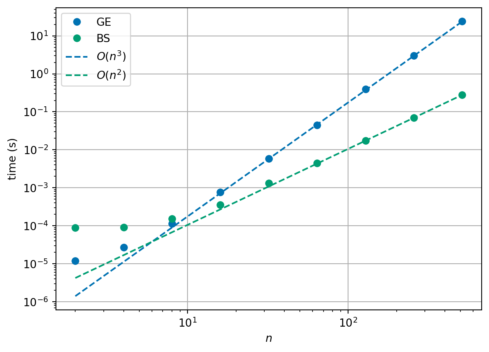

4 Direct solvers for systems of linear equations
This section deals with first method we will use to solve systems of linear equations. We will see that by using the approach of Gaussian elimination (and variations of that method), we can solve any system of linear equations that has a solution.
Gaussian elimination should look very familiar to you – this looks a lot like solving simultaneous equations in high school. Here, we are trying to codify this approach into an algorithm that a computer can apply without any further human input in a way that always ‘works’ (or at least works when it should!).
4.1 Reminder of the problem
Recall the problem is to solve a set of \(n\) linear equations for \(n\) unknown values \(x_j\), for \(j=1, 2, \ldots, n\).
Notation:
\[\begin{align*} \text{Equation } 1: && a_{11} x_1 + a_{12} x_2 + a_{13} x_3 + \cdots + a_{1n} x_n & = b_1 \\ \text{Equation } 2: && a_{21} x_1 + a_{22} x_2 + a_{23} x_3 + \cdots + a_{2n} x_n & = b_2 \\ \vdots \\ \text{Equation } i: && a_{i1} x_1 + a_{i2} x_2 + a_{i3} x_3 + \cdots + a_{in} x_n & = b_i \\ \vdots \\ \text{Equation } n: && a_{n1} x_1 + a_{n2} x_2 + a_{n3} x_3 + \cdots + a_{nn} x_n & = b_n. \end{align*}\]
We can also write the system of linear equations in general matrix-vector form:
\[ \begin{pmatrix} a_{11} & a_{12} & a_{13} & \cdots & a_{1n} \\ a_{21} & a_{22} & a_{23} & \cdots & a_{2n} \\ a_{31} & a_{32} & a_{33} & \cdots & a_{3n} \\ \vdots & \vdots & \vdots & & \vdots \\ a_{n1} & a_{n2} & a_{n3} & \cdots & a_{nn} \end{pmatrix} \begin{pmatrix} x_1 \\ x_2 \\ x_3 \\ \vdots \\ x_n \end{pmatrix} = \begin{pmatrix} b_1 \\ b_2 \\ b_3 \\ \vdots \\ b_n \end{pmatrix}. \]
Recall that the \(n \times n\) matrix \(A\) represents the coefficients that multiply the unknowns in each equation (row), while the \(n\)-vector \(\vec{b}\) represents the right-hand-side values.
Our strategy will be to reduce the system to a triangular system of matrices, which is then easy to solve!
4.2 Elementary row operations
Consider equation \(p\) of the above system:
\[ a_{p1} x_1 + a_{p2} x_2 + a_{p3} x_3 + \cdots + a_{pn} x_n = b_p, \]
and equation \(q\):
\[ a_{q1} x_1 + a_{q2} x_2 + a_{q3} x_3 + \cdots + a_{qn} x_n = b_q. \]
Note three things…
The order in which we choose to write the \(n\) equations is irrelevant
We can multiply any equation by an arbitrary real number (\(k \neq 0\) say):
\[ k a_{p1} x_1 + k a_{p2} x_2 + k a_{p3} x_3 + \cdots + k a_{pn} x_n = k b_p. \]
We can add any two equations:
\[ k a_{p1} x_1 + k a_{p2} x_2 + k a_{p3} x_3 + \cdots + k a_{pn} x_n = k b_p \]
added to
\[ a_{q1} x_1 + a_{q2} x_2 + a_{q3} x_3 + \cdots + a_{qn} x_n = b_q \]
yields
\[ (k a_{p1} + a_{q1}) x_1 + (k a_{p2} + a_{q2}) x_2 + \cdots + (k a_{pn} + a_{qn}) x_n = k b_p + b_q. \]
Example 4.1 Consider the system \[\begin{align} 2 x_1 + 3 x_2 & = 4 \label{eq:eg1a} \\ -3 x_1 + 2 x_2 & = 7 \label{eq:eg1b}. \end{align}\] Then we have: \[\begin{align*} 4 \times \text{\eqref{eq:eg1a}} & \rightarrow & 8 x_1 + 12 x_2 & = 16 \\ -15. \times \text{\eqref{eq:eg1b}} & \rightarrow & 4.5 x_2 - 3 x_2 & = -10.5 \\ \text{\eqref{eq:eg1a}} + \text{\eqref{eq:eg1b}} & \rightarrow & -x_1 + 5 x_2 & = 11 \\ \text{\eqref{eq:eg1b}} + 1.5 \times \text{\eqref{eq:eg1a}} & \rightarrow & 0 + 6.5 x_2 & = 13. \end{align*}\]
Exercise 4.1 Consider the system \[\begin{align} x_1 + 2 x_2 & = 1 \label{eq:eg2a} \\ 4 x_1 + x_2 & = -3 \label{eq:eg2b}. \end{align}\] Work out the result of these elementary row operations: \[\begin{align*} 2 \times \text{\eqref{eq:eg2a}} & \rightarrow \\ 0.25 \times \text{\eqref{eq:eg2b}} & \rightarrow \\ \text{\eqref{eq:eg2b}} + (-1) \times \text{\eqref{eq:eg2a}} & \rightarrow \\ \text{\eqref{eq:eg2b}} + (-4) \times \text{\eqref{eq:eg2a}} & \rightarrow \end{align*}\]
For a system written in matrix form our three observations mean the following:
We can swap any two rows of the matrix (and corresponding right-hand side entries). For example:
\[ \begin{pmatrix} 2 & 3 \\ -3 & 2 \end{pmatrix} \begin{pmatrix} x_1 \\ x_2 \end{pmatrix} = \begin{pmatrix} 4 \\ 7 \end{pmatrix} \Rightarrow \begin{pmatrix} -3 & 2\\ 2 & 3 \end{pmatrix} \begin{pmatrix} x_1 \\ x_2 \end{pmatrix} = \begin{pmatrix} 7 \\ 4 \end{pmatrix} \]
We can multiply any row of the matrix (and corresponding right-hand side entry) by a scalar. For example:
\[ \begin{pmatrix} 2 & 3 \\ -3 & 2 \end{pmatrix} \begin{pmatrix} x_1 \\ x_2 \end{pmatrix} = \begin{pmatrix} 4 \\ 7 \end{pmatrix} \Rightarrow \begin{pmatrix} 1 & \frac{3}{2} \\ -3 & 2 \end{pmatrix} \begin{pmatrix} x_1 \\ x_2 \end{pmatrix} = \begin{pmatrix} 2 \\ 7 \end{pmatrix} \]
We can replace row \(q\) by row \(q + k \times\) row \(p\). For example:
\[ \begin{pmatrix} 2 & 3 \\ -3 & 2 \end{pmatrix} \begin{pmatrix} x_1 \\ x_2 \end{pmatrix} = \begin{pmatrix} 4 \\ 7 \end{pmatrix} \Rightarrow \begin{pmatrix} 2 & 3 \\ 0 & 6.5 \end{pmatrix} \begin{pmatrix} x_1 \\ x_2 \end{pmatrix} = \begin{pmatrix} 4 \\ 13 \end{pmatrix} \]
(here we replaced row \(w\) by row \(2 + 1.5 \times\) row \(1\))
\[ \begin{pmatrix} 1 & 2 \\ 4 & 1 \end{pmatrix} \begin{pmatrix} x_1 \\ x_2 \end{pmatrix} = \begin{pmatrix} 1 \\ -3 \end{pmatrix} \Rightarrow \begin{pmatrix} 1 & 2 \\ 0 & -7 \end{pmatrix} \begin{pmatrix} x_1 \\ x_2 \end{pmatrix} = \begin{pmatrix} 1 \\ -7 \end{pmatrix} \]
(here we replaced row \(2\) by row \(2 + (-4) \times\) row \(1\))
Our strategy for solving systems of linear equations using Gaussian elimination is based on the following ideas:
The three types of operation described above are called elementary row operations (ERO).
We will apply a sequence of ERO to reduce an arbitrary system to a triangular form, which, we will see, can be easily solved.
The algorithm for reducing a general matrix to upper triangular form is known as forward elimination or (more commonly) as Gaussian elimination.
4.3 Gaussian elimination
The algorithm of Gaussian elimination is an ancient method that you may have already met at school – perhaps by a different name. The details of the method may seem confusing at first. We are following the ideas of elimination from systems of simultaneous equations, but in a way that a computer understands. Thinking like a computer is an important point in this section. You will have seen different ideas of how to solve systems of simultaneous equations where the first step is to “look at the equations to decide the easiest first step”. When there are \(10^9\) equations, it is not effective for a computer to try to find an easy way through the problem. The computer must be given a simple set of instructions to follow: this will be our algorithm.
The method is so old, in fact we have evidence of Chinese mathematicians using Gaussian elimination in 179CE (From Wikipedia):
The method of Gaussian elimination appears in the Chinese mathematical text Chapter Eight: Rectangular Arrays of The Nine Chapters on the Mathematical Art. Its use is illustrated in eighteen problems, with two to five equations. The first reference to the book by this title is dated to 179 CE, but parts of it were written as early as approximately 150 BCE. It was commented on by Liu Hui in the 3rd century.
The method in Europe stems from the notes of Isaac Newton. In 1670, he wrote that all the algebra books known to him lacked a lesson for solving simultaneous equations, which Newton then supplied. Carl Friedrich Gauss in 1810 devised a notation for symmetric elimination that was adopted in the 19th century by professional hand computers to solve the normal equations of least-squares problems. The algorithm that is taught in high school was named for Gauss only in the 1950s as a result of confusion over the history of the subject.
4.3.1 The algorithm
The following algorithm systematically introduces zeros into the system of equations, below the diagonal.
- Subtract multiples of row 1 from the rows below it to eliminate (make zero) non-zero entries in column 1.
- Subtract multiples of the new row 2 from the rows below it to eliminate non-zero entries in column 2.
- Repeat for row \(3, 4, \ldots, n-1\).
After row \(n-1\) all entities below the diagonal have been eliminated, so \(A\) is now upper triangular and the resulting system can be solved by backward substitution.
Example 4.2 Use Gaussian elimination to reduce the following system of equations to upper triangular form:
\[ \begin{pmatrix} 2 & 1 & 4 \\ 1 & 2 & 2 \\ 2 & 4 & 6 \end{pmatrix} \begin{pmatrix} x_1 \\ x_2 \\ x_3 \end{pmatrix} = \begin{pmatrix} 12 \\ 9 \\ 22 \end{pmatrix}. \]
First, use the first row to eliminate the first column below the diagonal:
(row 2) \(- 0.5 \times\) (row 1) gives
\[ \begin{pmatrix} 2 & 1 & 4 \\ \mathbf{0} & 1.5 & 0 \\ 2 & 4 & 6 \end{pmatrix} \begin{pmatrix} x_1 \\ x_2 \\ x_3 \end{pmatrix} = \begin{pmatrix} 12 \\ 3 \\ 22 \end{pmatrix} \]
(row 3) \(-\) (row 1) then gives
\[ \begin{pmatrix} 2 & 1 & 4 \\ \mathbf{0} & 1.5 & 0 \\ \mathbf{0} & 3 & 2 \end{pmatrix} \begin{pmatrix} x_1 \\ x_2 \\ x_3 \end{pmatrix} = \begin{pmatrix} 12 \\ 3 \\ 10 \end{pmatrix} \]
Now use the second row to eliminate the second column below the diagonal.
(row 3) \(- 2 \times\) (row 2) gives
\[ \begin{pmatrix} 2 & 1 & 4 \\ \mathbf{0} & 1.5 & 0 \\ \mathbf{0} & \mathbf{0} & 2 \end{pmatrix} \begin{pmatrix} x_1 \\ x_2 \\ x_3 \end{pmatrix} = \begin{pmatrix} 12 \\ 3 \\ 4 \end{pmatrix} \]
Exercise 4.2 Use Gaussian elimination to reduce the following system of linear equations to upper triangular form.
\[ \begin{pmatrix} 4 & -1 & -1 \\ 2 & 4 & 2 \\ 1 & 2 & 4 \end{pmatrix} \begin{pmatrix} x_1 \\ x_2 \\ x_3 \end{pmatrix} = \begin{pmatrix} 9 \\ -6 \\ 3 \end{pmatrix}. \]
The key idea is that:
Each row \(i\) is used to eliminate the entries in column \(i\) below \(a_{ii}\), i.e. it forces \(a_{ji} = 0\) for \(j > i\).
The elimination is done by subtracting a multiple of row \(i\) from row \(j\):
\[ (\text{row } j) \leftarrow (\text{row } j) - \frac{a_{ji}}{a_{ii}} (\text{row } i). \]
Our update formula guarantees that \(a_{ji}\) becomes zero because
\[ a_{ji} \leftarrow a_{ji} - \frac{a_{ji}}{a_{ii}} a_{ii} = a_{ji} - a_{ji} = 0. \]
4.3.2 Python version
We start with some helper code which determines the size of the system we are working with:
def system_size(A, b):
"""
Validate the dimensions of a linear system and return its size.
This function checks whether the given coefficient matrix `A` is square
and whether its dimensions are compatible with the right-hand side vector
`b`. If the dimensions are valid, it returns the size of the system.
Parameters
----------
A : numpy.ndarray
A 2D array of shape ``(n, n)`` representing the coefficient matrix of
the linear system.
b : numpy.ndarray
A array of shape ``(n, o)`` representing the right-hand side vector.
Returns
-------
int
The size of the system, i.e., the number of variables `n`.
Raises
------
ValueError
If `A` is not square or if the size of `b` does not match the number of
rows in `A`.
"""
# Validate that A is a 2D square matrix
if A.ndim != 2:
raise ValueError(f"Matrix A must be 2D, but got {A.ndim}D array")
n, m = A.shape
if n != m:
raise ValueError(f"Matrix A must be square, but got A.shape={A.shape}")
if b.shape[0] != n:
raise ValueError(
f"System shapes are not compatible: A.shape={A.shape}, "
f"b.shape={b.shape}"
)
return nThen we can implement the elementary row operations
def row_swap(A, b, p, q):
"""
Swap two rows in a linear system of equations in place.
This function swaps the rows `p` and `q` of the coefficient matrix `A`
and the right-hand side vector `b` for a linear system of equations
of the form ``Ax = b``. The operation is performed **in place**, modifying
the input arrays directly.
Parameters
----------
A : numpy.ndarray
A 2D NumPy array of shape ``(n, n)`` representing the coefficient matrix
of the linear system.
b : numpy.ndarray
A 2D NumPy array of shape ``(n, 1)`` representing the right-hand side
vector of the system.
p : int
The index of the first row to swap. Must satisfy ``0 <= p < n``.
q : int
The index of the second row to swap. Must satisfy ``0 <= q < n``.
Returns
-------
None
This function modifies `A` and `b` directly and does not return
anything.
"""
# get system size
n = system_size(A, b)
# swap rows of A
for j in range(n):
A[p, j], A[q, j] = A[q, j], A[p, j]
# swap rows of b
b[p, 0], b[q, 0] = b[q, 0], b[p, 0]
def row_scale(A, b, p, k):
"""
Scale a row of a linear system by a constant factor in place.
This function multiplies all entries in row `p` of the coefficient matrix
`A` and the corresponding entry in the right-hand side vector `b` by a
scalar `k`. The operation is performed **in place**, modifying the input
arrays directly.
Parameters
----------
A : numpy.ndarray
A 2D NumPy array of shape ``(n, n)`` representing the coefficient matrix
of the linear system.
b : numpy.ndarray
A 2D NumPy array of shape ``(n, 1)`` representing the right-hand side
vector of the system.
p : int
The index of the row to scale. Must satisfy ``0 <= p < n``.
k : float
The scalar multiplier applied to the entire row.
Returns
-------
None
This function modifies `A` and `b` directly and does not return
anything.
"""
n = system_size(A, b)
# scale row p of A
for j in range(n):
A[p, j] = k * A[p, j]
# scale row p of b
b[p, 0] = b[p, 0] * k
def row_add(A, b, p, k, q):
"""
Perform an in-place row addition operation on a linear system.
This function applies the elementary row operation:
``row_p ← row_p + k * row_q``
where `row_p` and `row_q` are rows in the coefficient matrix `A` and the
right-hand side vector `b`. It updates the entries of `A` and `b`
**in place**, directly modifying the original data.
Parameters
----------
A : numpy.ndarray
A 2D NumPy array of shape ``(n, n)`` representing the coefficient matrix
of the linear system.
b : numpy.ndarray
A 2D NumPy array of shape ``(n, 1)`` representing the right-hand side
vector of the system.
p : int
The index of the row to be updated (destination row). Must satisfy
``0 <= p < n``.
k : float
The scalar multiplier applied to `row_q` before adding it to `row_p`.
q : int
The index of the source row to be scaled and added. Must satisfy
``0 <= q < n``.
"""
n = system_size(A, b)
# Perform the row operation
for j in range(n):
A[p, j] = A[p, j] + k * A[q, j]
# Update the corresponding value in b
b[p, 0] = b[p, 0] + k * b[q, 0]Let’s test we are ok so far:
Test 1: swapping rows
A = np.array([[2.0, 3.0], [-3.0, 2.0]])
b = np.array([[4.0], [7.0]])
print("starting arrays:")
print_array(A)
print_array(b)
print()
print("swapping rows 0 and 1")
row_swap(A, b, 0, 1) # remember numpy arrays are indexed starting from zero!
print()
print("new arrays:")
print_array(A)
print_array(b)
print()starting arrays:
A = [ 2.0, 3.0 ]
[ -3.0, 2.0 ]
b = [ 4.0 ]
[ 7.0 ]
swapping rows 0 and 1
new arrays:
A = [ -3.0, 2.0 ]
[ 2.0, 3.0 ]
b = [ 7.0 ]
[ 4.0 ]
Test 2: scaling one row
A = np.array([[2.0, 3.0], [-3.0, 2.0]])
b = np.array([[4.0], [7.0]])
print("starting arrays:")
print_array(A)
print_array(b)
print()
print("row 0 |-> 0.5 * row 0")
row_scale(A, b, 0, 0.5) # remember numpy arrays are indexed started from zero!
print()
print("new arrays:")
print_array(A)
print_array(b)
print()starting arrays:
A = [ 2.0, 3.0 ]
[ -3.0, 2.0 ]
b = [ 4.0 ]
[ 7.0 ]
row 0 |-> 0.5 * row 0
new arrays:
A = [ 1.0, 1.5 ]
[ -3.0, 2.0 ]
b = [ 2.0 ]
[ 7.0 ]
Test 3: replacing a row by that adding a multiple of another row
A = np.array([[2.0, 3.0], [-3.0, 2.0]])
b = np.array([[4.0], [7.0]])
print("starting arrays:")
print_array(A)
print_array(b)
print()
print("row 1 |-> row 1 + 1.5 * row 0")
row_add(A, b, 1, 1.5, 0) # remember numpy arrays are indexed started from zero!
print()
print("new arrays:")
print_array(A)
print_array(b)
print()starting arrays:
A = [ 2.0, 3.0 ]
[ -3.0, 2.0 ]
b = [ 4.0 ]
[ 7.0 ]
row 1 |-> row 1 + 1.5 * row 0
new arrays:
A = [ 2.0, 3.0 ]
[ 0.0, 6.5 ]
b = [ 4.0 ]
[ 13.0 ]
Now we can define our Gaussian elimination function. We update the values in-place to avoid extra memory allocations.
def gaussian_elimination(A, b, verbose=False):
"""
Perform Gaussian elimination to reduce a linear system to upper triangular
form.
This function performs **forward elimination** to transform the coefficient
matrix `A` into an upper triangular matrix, while applying the same
operations to the right-hand side vector `b`. This is the first step in
solving a linear system of equations of the form ``Ax = b`` using Gaussian
elimination.
Parameters
----------
A : numpy.ndarray
A 2D NumPy array of shape ``(n, n)`` representing the coefficient matrix
of the system.
b : numpy.ndarray
A 2D NumPy array of shape ``(n, 1)`` representing the right-hand side
vector.
verbose : bool, optional
If ``True``, prints detailed information about each elimination step,
including the row operations performed and the intermediate forms of
`A` and `b`. Default is ``False``.
Returns
-------
None
This function modifies `A` and `b` **in place** and does not return
anything.
"""
# find shape of system
n = system_size(A, b)
# perform forwards elimination
for i in range(n - 1):
# eliminate column i
if verbose:
print(f"eliminating column {i}")
for j in range(i + 1, n):
# row j
factor = A[j, i] / A[i, i]
if verbose:
print(f" row {j} |-> row {j} - {factor} * row {i}")
row_add(A, b, j, -factor, i)
if verbose:
print()
print("new system")
print_array(A)
print_array(b)
print()We can try our code on Example 1:
A = np.array([[2.0, 1.0, 4.0], [1.0, 2.0, 2.0], [2.0, 4.0, 6.0]])
b = np.array([[12.0], [9.0], [22.0]])
print("starting system:")
print_array(A)
print_array(b)
print()
print("performing Gaussian Elimination")
gaussian_elimination(A, b, verbose=True)
print()
print("final system:")
print_array(A)
print_array(b)
print()
# test that A is really upper triangular
print("Is A really upper triangular?", np.allclose(A, np.triu(A)))starting system:
A = [ 2.0, 1.0, 4.0 ]
[ 1.0, 2.0, 2.0 ]
[ 2.0, 4.0, 6.0 ]
b = [ 12.0 ]
[ 9.0 ]
[ 22.0 ]
performing Gaussian Elimination
eliminating column 0
row 1 |-> row 1 - 0.5 * row 0
row 2 |-> row 2 - 1.0 * row 0
new system
A = [ 2.0, 1.0, 4.0 ]
[ 0.0, 1.5, 0.0 ]
[ 0.0, 3.0, 2.0 ]
b = [ 12.0 ]
[ 3.0 ]
[ 10.0 ]
eliminating column 1
row 2 |-> row 2 - 2.0 * row 1
new system
A = [ 2.0, 1.0, 4.0 ]
[ 0.0, 1.5, 0.0 ]
[ 0.0, 0.0, 2.0 ]
b = [ 12.0 ]
[ 3.0 ]
[ 4.0 ]
final system:
A = [ 2.0, 1.0, 4.0 ]
[ 0.0, 1.5, 0.0 ]
[ 0.0, 0.0, 2.0 ]
b = [ 12.0 ]
[ 3.0 ]
[ 4.0 ]
Is A really upper triangular? True4.4 Solving triangular systems of equations
A general lower triangular system of equations has \(a_{ij} = 0\) for \(j > i\) and takes the form:
\[ \begin{pmatrix} a_{11} & 0 & 0 & \cdots & 0 \\ a_{21} & a_{22} & 0 & \cdots & 0 \\ a_{31} & a_{32} & a_{33} & \cdots & 0 \\ \vdots & \vdots & \vdots & \ddots & \vdots \\ a_{n1} & a_{n2} & a_{n3} & \cdots & a_{nn} \end{pmatrix} \begin{pmatrix} x_1 \\ x_2 \\ x_3 \\ \vdots \\ x_n \end{pmatrix} = \begin{pmatrix} b_1 \\ b_2 \\ b_3 \\ \vdots \\ b_n \end{pmatrix}. \]
Note that first equation is
\[ a_{11} x_1 = b_1. \]
Then \(x_i\) can be found by calculating
\[ x_i = \frac{1}{a_{ii}} \left(b_i - \sum_{j=1}^{i-1} a_{ij} x_j \right) \]
for each row \(i = 1, 2, \ldots, n\) in turn.
- Each calculation requires only previously computed values \(x_j\) (and the sum gives a loop for \(j < i\).
- The matrix \(A\) must have non-zero diagonal entries
i.e. \(a_{ii} \neq 0\) for \(i = 1, 2, \ldots, n\). - Upper triangular systems of equations can be solved in similarly.
Example 4.3 Solve the lower triangular system of equations given by
\[ \begin{aligned} 2 x_1 && && &= 2 \\ x_1 &+& 2 x_2 && &= 7 \\ 2 x_1 &+& 4 x_2 &+& 6 x_3 &= 26 \end{aligned} \]
or, equivalently,
\[ \begin{pmatrix} 2 & 0 & 0 \\ 1 & 2 & 0 \\ 2 & 4 & 6 \end{pmatrix} \begin{pmatrix} x_1 \\ x_2 \\ x_3 \end{pmatrix} = \begin{pmatrix} 2 \\ 7 \\ 26 \end{pmatrix}. \]
The solution can be calculated systematically from
\[ \begin{aligned} x_1 &= \frac{b_1}{a_{11}} = \frac{2}{2} = 1 \\ x_2 &= \frac{b_2 - a_{21} x_1}{a_{22}} = \frac{7 - 1 \times 1}{2} = \frac{6}{2} = 3 \\ x_3 &= \frac{b_3 - a_{31} x_1 - a_{32} x_2}{a_33} = \frac{26 - 2 \times 1 - 4 \times 3}{6} = \frac{12}{6} = 2 \end{aligned} \]
which gives the solution \(\vec{x} = (1, 3, 2)^T\).
Exercise 4.3 Solve the upper triangular linear system given by
\[ \begin{aligned} 2 x_1 &+& x_2 &+& 4 x_3 &=& 12 \\ && 1.5 x_2 && &=& 3 \\ && && 2 x_3 &=& 4 \end{aligned}. \]
Remark 4.1.
It is simple to solve a lower (upper) triangular system of equations (provided the diagonal is non-zero).
This process is often referred to as forward (backwards) substitution.
A general system of equations (i.e. a full matrix \(A\)) can be solved rapidly once it has been reduced to upper triangular form. The entire process is called Gaussian elimination with backward substitution.
We can define functions to solve both upper and lower triangular form systems of linear equations:
def forward_substitution(A, b):
"""
Solve a lower triangular system of linear equations using forward
substitution.
This function solves the system of equations:
.. math::
A x = b
where `A` is a **lower triangular matrix** (all elements above the main
diagonal are zero). The solution vector `x` is computed sequentially by
solving each equation starting from the first row.
Parameters
----------
A : numpy.ndarray
A 2D NumPy array of shape ``(n, n)`` representing the lower triangular
coefficient matrix of the system.
b : numpy.ndarray
A 1D NumPy array of shape ``(n,)`` or a 2D NumPy array of shape
``(n, 1)`` representing the right-hand side vector.
Returns
-------
x : numpy.ndarray
A NumPy array of shape ``(n,)`` containing the solution vector.
"""
"""
solves the system of linear equationa Ax = b assuming that A is lower
triangular. returns the solution x
"""
# get size of system
n = system_size(A, b)
# check is lower triangular
if not np.allclose(A, np.tril(A)):
raise ValueError("Matrix A is not lower triangular")
# create solution variable
x = np.empty_like(b)
# perform forwards solve
for i in range(n):
partial_sum = 0.0
for j in range(0, i):
partial_sum += A[i, j] * x[j]
x[i] = 1.0 / A[i, i] * (b[i] - partial_sum)
return x
def backward_substitution(A, b):
"""
Solve an upper triangular system of linear equations using backward
substitution.
This function solves the system of equations:
.. math::
A x = b
where `A` is an **upper triangular matrix** (all elements below the main
diagonal are zero). The solution vector `x` is computed starting from the
last equation and proceeding backward.
Parameters
----------
A : numpy.ndarray
A 2D NumPy array of shape ``(n, n)`` representing the upper triangular
coefficient matrix of the system.
b : numpy.ndarray
A 1D NumPy array of shape ``(n,)`` or a 2D NumPy array of shape
``(n, 1)`` representing the right-hand side vector.
Returns
-------
x : numpy.ndarray
A NumPy array of shape ``(n,)`` containing the solution vector.
"""
# get size of system
n = system_size(A, b)
# check is upper triangular
assert np.allclose(A, np.triu(A))
# create solution variable
x = np.empty_like(b)
# perform backwards solve
for i in range(n - 1, -1, -1): # iterate over rows backwards
partial_sum = 0.0
for j in range(i + 1, n):
partial_sum += A[i, j] * x[j]
x[i] = 1.0 / A[i, i] * (b[i] - partial_sum)
return xAnd we can then test it out!
A = np.array([[2.0, 0.0, 0.0], [1.0, 2.0, 0.0], [2.0, 4.0, 6.0]])
b = np.array([[2.0], [7.0], [26.0]])
print("The system is given by:")
print_array(A)
print_array(b)
print()
print("Solving the system using forward substitution")
x = forward_substitution(A, b)
print()
print("The solution using forward substitution is:")
print_array(x)
print()
print("Does x really solve the system?", np.allclose(A @ x, b))The system is given by:
A = [ 2.0, 0.0, 0.0 ]
[ 1.0, 2.0, 0.0 ]
[ 2.0, 4.0, 6.0 ]
b = [ 2.0 ]
[ 7.0 ]
[ 26.0 ]
Solving the system using forward substitution
The solution using forward substitution is:
x = [ 1.0 ]
[ 3.0 ]
[ 2.0 ]
Does x really solve the system? TrueWe can also do a backward substitution test:
A = np.array([[2.0, 1.0, 4.0], [0.0, 1.5, 0.0], [0.0, 0.0, 2.0]])
b = np.array([[12.0], [3.0], [4.0]])
print("The system is given by:")
print_array(A)
print_array(b)
print()
print("Solving the system using backward substitution")
x = backward_substitution(A, b)
print()
print("The solution using backward substitution is:")
print_array(x)
print()
print("Does x really solve the system?", np.allclose(A @ x, b))The system is given by:
A = [ 2.0, 1.0, 4.0 ]
[ 0.0, 1.5, 0.0 ]
[ 0.0, 0.0, 2.0 ]
b = [ 12.0 ]
[ 3.0 ]
[ 4.0 ]
Solving the system using backward substitution
The solution using backward substitution is:
x = [ 1.0 ]
[ 2.0 ]
[ 2.0 ]
Does x really solve the system? True4.5 Combining Gaussian elimination and backward substitution
Our grand strategy can now come together so we have a method to solve systems of linear equations:
Given a system of linear equations \(A\vec{x} = \vec{b}\);
- First perform Gaussian elimination to give an equivalent system of equations in upper triangular form;
- Then use backward substitution to produce a solution \(\vec{x}\)
We can use our code to test this:
A = np.array([[2.0, 1.0, 4.0], [1.0, 2.0, 2.0], [2.0, 4.0, 6.0]])
b = np.array([[12.0], [9.0], [22.0]])
print("starting system:")
print_array(A)
print_array(b)
print()
print("performing Gaussian Elimination")
gaussian_elimination(A, b, verbose=True)
print()
print("upper triangular system:")
print_array(A)
print_array(b)
print()
print("Solving the system using backward substitution")
x = backward_substitution(A, b)
print()
print("solution using backward substitution:")
print_array(x)
print()
A = np.array([[2.0, 1.0, 4.0], [1.0, 2.0, 2.0], [2.0, 4.0, 6.0]])
b = np.array([[12.0], [9.0], [22.0]])
print("Does x really solve the original system?", np.allclose(A @ x, b))starting system:
A = [ 2.0, 1.0, 4.0 ]
[ 1.0, 2.0, 2.0 ]
[ 2.0, 4.0, 6.0 ]
b = [ 12.0 ]
[ 9.0 ]
[ 22.0 ]
performing Gaussian Elimination
eliminating column 0
row 1 |-> row 1 - 0.5 * row 0
row 2 |-> row 2 - 1.0 * row 0
new system
A = [ 2.0, 1.0, 4.0 ]
[ 0.0, 1.5, 0.0 ]
[ 0.0, 3.0, 2.0 ]
b = [ 12.0 ]
[ 3.0 ]
[ 10.0 ]
eliminating column 1
row 2 |-> row 2 - 2.0 * row 1
new system
A = [ 2.0, 1.0, 4.0 ]
[ 0.0, 1.5, 0.0 ]
[ 0.0, 0.0, 2.0 ]
b = [ 12.0 ]
[ 3.0 ]
[ 4.0 ]
upper triangular system:
A = [ 2.0, 1.0, 4.0 ]
[ 0.0, 1.5, 0.0 ]
[ 0.0, 0.0, 2.0 ]
b = [ 12.0 ]
[ 3.0 ]
[ 4.0 ]
Solving the system using backward substitution
solution using backward substitution:
x = [ 1.0 ]
[ 2.0 ]
[ 2.0 ]
Does x really solve the original system? TrueExercise 4.4 Use Gaussian elimination followed by backwards elimination to solve the system: \[\begin{equation*} \begin{pmatrix} 2 & 1 & -1 \\ 4 & 5 & 7 \\ -8 & -3 & 3 \end{pmatrix} \begin{pmatrix} x_1 \\ x_2 \\ x_3 \end{pmatrix} = \begin{pmatrix} 6 \\ 30 \\ -22 \end{pmatrix}. \end{equation*}\]. $$
4.6 The cost of Gaussian Elimination
Gaussian elimination (GE) is unnecessarily expensive when it is applied to many systems of equations with the same matrix \(A\) but different right-hand sides \(\vec{b}\).
- The forward elimination process is the most computationally expensive part at \(O(n^3)\) but is exactly the same for any choice of \(\vec{b}\).
- In contrast, the solution of the resulting upper triangular system only requires \(O(n^2)\) operations.

We can use this information to improve the way in which we solve multiple systems of equations with the same matrix \(A\) but different right-hand sides \(\vec{b}\).
4.7 LU factorisation
Our next algorithm, called LU factorisation, is a way to try to speed up Gaussian elimination by reusing information. This can be used when we solve systems of equations with the same matrix \(A\) but different right hand sides \(\vec{b}\) - this is more common than you would think!
Recall the elementary row operations (EROs) from above. Note that the EROs can be produced by left multiplication with a suitable matrix:
Row swap:
\[ \begin{pmatrix} 1 & 0 & 0 \\ 0 & 0 & 1 \\ 0 & 1 & 0 \end{pmatrix} \begin{pmatrix} a & b & c \\ d & e & f \\ g & h & i \end{pmatrix} = \begin{pmatrix} a & b & c \\ g & h & i \\ d & e & f \end{pmatrix} \]
Row swap:
\[ \begin{pmatrix} 1 & 0 & 0 & 0 \\ 0 & 0 & 1 & 0 \\ 0 & 1 & 0 & 0 \\ 0 & 0 & 0 & 1 \end{pmatrix} \begin{pmatrix} a & b & c & d \\ e & f & g & h \\ i & j & k & l \\ m & n & o & p \end{pmatrix} = \begin{pmatrix} a & b & c & d \\ i & j & k & l \\ e & f & g & h \\ m & n & o & p \end{pmatrix} \]
Multiply row by \(\alpha\):
\[ \begin{pmatrix} \alpha & 0 & 0 \\ 0 & 1 & 0 \\ 0 & 0 & 1 \end{pmatrix} \begin{pmatrix} a & b & c \\ d & e & f \\ g & h & i \end{pmatrix} = \begin{pmatrix} \alpha a & \alpha b & \alpha c \\ d & e & f \\ g & h & i \end{pmatrix} \]
\(\alpha \times \text{row } p + \text{row } q\):
\[ \begin{pmatrix} 1 & 0 & 0 \\ 0 & 1 & 0 \\ \alpha & 0 & 1 \end{pmatrix} \begin{pmatrix} a & b & c \\ d & e & f \\ g & h & i \end{pmatrix} = \begin{pmatrix} a & b & c \\ d & e & f \\ \alpha a + g & \alpha b + h & \alpha c + i \end{pmatrix} \]
Since Gaussian elimination (GE) is just a sequence of EROs and each ERO is just multiplication by a suitable matrix, say \(E_k\), forward elimination applied to the system \(A \vec{x} = \vec{b}\) can be expressed as \[ (E_m \cdots E_1) A \vec{x} = (E_m \cdots E_1) \vec{b}, \] here \(m\) is the number of EROs required to reduce the upper triangular form.
Let \(U = (E_m \cdots E_1) A\) and \(L = (E_m \cdots E_1)^{-1}\). Now the original system \(A \vec{x} = \vec{b}\) is equivalent to
\[\begin{equation} \label{eq:LU} L U \vec{x} = \vec{b} \end{equation}\]
where \(U\) is upper triangular (by construction) and \(L\) may be shown to be lower triangular (provided the EROs do not include any row swaps).
Once \(L\) and \(U\) are known it is easy to solve \(\eqref{eq:LU}\)
- Solve \(L \vec{z} = \vec{b}\) in \(O(n^2)\) operations.
- Solve \(U \vec{x} = \vec{z}\) in \(O(n^2)\) operations.
\(L\) and \(U\) may be found in \(O(n^3)\) operations by performing GE and saving the \(E_i\) matrices: however, it is more convenient to find them directly (also \(O(n^3)\) operations).
4.7.1 Computing \(L\) and \(U\)
Consider a general \(4 \times 4\) matrix \(A\) and its factorisation \(LU\):
\[ \begin{pmatrix} a_{11} & a_{12} & a_{13} & a_{14} \\ a_{21} & a_{22} & a_{23} & a_{24} \\ a_{31} & a_{32} & a_{33} & a_{34} \\ a_{41} & a_{42} & a_{43} & a_{44} \end{pmatrix} = \begin{pmatrix} 1 & 0 & 0 & 0 \\ l_{21} & 1 & 0 & 0 \\ l_{31} & l_{32} & 1 & 0 \\ l_{41} & l_{42} & l_{43} & 1 \end{pmatrix} \begin{pmatrix} u_{11} & u_{12} & u_{13} & u_{14} \\ 0 & u_{22} & u_{23} & u_{24} \\ 0 & 0 & u_{33} & u_{34} \\ 0 & 0 & 0 & u_{44} \end{pmatrix} \]
For the first column,
\[ \begin{aligned} a_{11} & = (1, 0, 0, 0) (u_{11}, 0, 0, 0)^T && = u_{11} & \rightarrow u_{11} & = a_{11} \\ a_{21} & = (l_{21}, 1, 0, 0)(u_{11}, 0, 0, 0)^T && = l_{21} u_{11} & \rightarrow l_{21} & = a_{21} / u_{11} \\ a_{31} & = (l_{31}, l_{32}, 1, 0)(u_{11}, 0, 0, 0)^T && = l_{31} u_{11} & \rightarrow l_{31} & = a_{31} / u_{11} \\ a_{41} & = (l_{41}, l_{42}, l_{43}, 1)(u_{11}, 0, 0, 0)^T && = l_{41} u_{11} & \rightarrow l_{41} & = a_{41} / u_{11} \end{aligned} \]
The second, third and fourth columns follow in a similar manner, giving all the entries in \(L\) and \(U\).
Remark 4.2.
\(L\) is assumed to have 1’s on the diagonal, to ensure that the factorisation is unique.
The process involves division by the diagonal entries \(u_{11}, u_{22}\), etc., so they must be non-zero.
In general the factors \(l_{ij}\) and \(u_{ij}\) are calculated for each column \(j\) in turn, i.e.,
Example 4.4 Use \(LU\) factorisation to solve the linear system of equations given by
\[ \begin{pmatrix} 2 & 1 & 4 \\ 1 & 2 & 2 \\ 2 & 4 & 6 \end{pmatrix} \begin{pmatrix} x_1 \\ x_2 \\ x_3 \end{pmatrix} = \begin{pmatrix} 12 \\ 9 \\ 22 \end{pmatrix}. \]
This can be rewritten in the form \(A = LU\) where
\[ \begin{pmatrix} 2 & 1 & 4 \\ 1 & 2 & 2 \\ 2 & 4 & 6 \end{pmatrix} = \begin{pmatrix} 1 & 0 & 0 \\ l_{21} & 1 & 0 \\ l_{31} & l_{32} & 1 \end{pmatrix} \begin{pmatrix} u_{11} & u_{12} & u_{13} \\ 0 & u_{22} & u_{23} \\ 0 & 0 & u_{33} \end{pmatrix}. \]
Column 1 of \(A\) gives
\[ \begin{aligned} 2 & = u_{11} && \rightarrow & u_{11} & = 2 \\ 1 & = l_{21} u_{11} && \rightarrow & l_{21} & = 0.5 \\ 2 & = l_{31} u_{11} && \rightarrow & l_{31} & = 1. \end{aligned} \]
Column 2 of \(A\) gives
\[ \begin{aligned} 1 & = u_{12} && \rightarrow & u_{12} & = 1 \\ 2 & = l_{21} u_{12} + u_{22} && \rightarrow & u_{22} & = 1.5 \\ 4 & = l_{31} u_{12} + l_{32} u_{22} && \rightarrow & l_{32} & = 2. \end{aligned} \]
Column 3 of \(A\) gives
\[ \begin{aligned} 4 & = u_{13} && \rightarrow & u_{13} & = 4 \\ 2 & = l_{21} u_{13} + u_{23} && \rightarrow & u_{23} & = 0 \\ 6 & = l_{31} u_{13} + l_{32} u_{23} + u_{33} && \rightarrow & u_{33} & = 2. \end{aligned} \]
Solve the lower triangular system \(L \vec{z} = \vec{b}\):
\[ \begin{pmatrix} 1 & 0 & 0 \\ 0.5 & 1 & 0 \\ 1 & 2 & 1 \end{pmatrix} \begin{pmatrix} z_1 \\ z_2 \\ z_3 \end{pmatrix} = \begin{pmatrix} 12 \\ 9 \\ 22 \end{pmatrix} \rightarrow \begin{pmatrix} z_1 \\ z_2 \\ z_3 \end{pmatrix} = \begin{pmatrix} 12 \\ 3 \\ 4 \end{pmatrix} \]
Solve the upper triangular system \(U \vec{x} = \vec{z}\):
\[ \begin{pmatrix} 2 & 1 & 4 \\ 0 & 1.5 & 0 \\ 0 & 0 & 2 \end{pmatrix} \begin{pmatrix} x_1 \\ x_2 \\ x_3 \end{pmatrix} \begin{pmatrix} 12 \\ 3 \\ 4 \end{pmatrix} \rightarrow \begin{pmatrix} x_1 \\ x_2 \\ x_3 \end{pmatrix} = \begin{pmatrix} 1 \\ 2 \\ 2 \end{pmatrix}. \]
Exercise 4.5 Rewrite the matrix \(A\) as the product of lower and upper triangular matrices where
\[ A = \begin{pmatrix} 4 & 2 & 0 \\ 2 & 3 & 1 \\ 0 & 1 & 2.5 \end{pmatrix}. \]
Remark. The first example gives
\[ \begin{pmatrix} 2 & 1 & 4 \\ 1 & 2 & 2 \\ 2 & 4 & 6 \end{pmatrix} = \begin{pmatrix} 1 & 0 & 0 \\ 0.5 & 1 & 0 \\ 1 & 2 & 1 \end{pmatrix} \begin{pmatrix} 2 & 1 & 4 \\ 0 & 1.5 & 0 \\ 0 & 0 & 2 \end{pmatrix} \]
Note that
the matrix \(U\) is the same as the fully eliminated upper triangular form produced by Gaussian elimination;
\(L\) contains the multipliers that were used at each stage to eliminate the rows.
4.8 Effects of finite precision arithmetic
Example 4.5 Consider the following linear system of equations
\[ \begin{pmatrix} 0 & 2 & 1 \\ 2 & 1 & 0 \\ 1 & 2 & 0 \end{pmatrix} \begin{pmatrix} x_1 \\ x_2 \\ x_3 \end{pmatrix} = \begin{pmatrix} 7 \\ 4 \\ 5 \end{pmatrix} \]
Problem. We cannot eliminate the first column by the diagonal by adding multiples of row 1 to rows 2 and 3, respectively.
Solution. Swap the order of the equations!
Swap rows 1 and 2:
\[ \begin{pmatrix} 2 & 1 & 0 \\ 0 & 2 & 1 \\ 1 & 2 & 0 \end{pmatrix} \begin{pmatrix} x_1 \\ x_2 \\ x_3 \end{pmatrix} = \begin{pmatrix} 4 \\ 7 \\ 5 \end{pmatrix} \]
Now apply Gaussian elimination
\[\begin{align*} \begin{pmatrix} 2 & 1 & 0 \\ 0 & 2 & 1 \\ 0 & 1.5 & 0 \end{pmatrix} \begin{pmatrix} x_1 \\ x_2 \\ x_3 \end{pmatrix} &= \begin{pmatrix} 4 \\ 7 \\ 3 \end{pmatrix} \\ \begin{pmatrix} 2 & 1 & 0 \\ 0 & 2 & 1 \\ 0 & 0 & -0.75 \end{pmatrix} \begin{pmatrix} x_1 \\ x_2 \\ x_3 \end{pmatrix} &= \begin{pmatrix} 4 \\ 7 \\ -2.25 \end{pmatrix}. \end{align*}\]
Example 4.6 Consider another system of equations
\[ \begin{pmatrix} 2 & 1 & 1 \\ 4 & 2 & 1 \\ 2 & 2 & 0 \end{pmatrix} \begin{pmatrix} x_1 \\ x_2 \\ x_3 \end{pmatrix} = \begin{pmatrix} 3 \\ 5 \\ 2 \end{pmatrix} \]
Apply Gaussian elimination as usual:
\[\begin{align*} \begin{pmatrix} 2 & 1 & 1 \\ 0 & 0 & -1 \\ 2 & 2 & 0 \end{pmatrix} \begin{pmatrix} x_1 \\ x_2 \\ x_3 \end{pmatrix} = \begin{pmatrix} 3 \\ -1 \\ 2 \end{pmatrix} \\ \begin{pmatrix} 2 & 1 & 1 \\ 0 & 0 & -1 \\ 0 & 1 & -1 \end{pmatrix} \begin{pmatrix} x_1 \\ x_2 \\ x_3 \end{pmatrix} = \begin{pmatrix} 3 \\ -1 \\ -1 \end{pmatrix} \end{align*}\]
Problem. We cannot eliminate the second column below the diagonal by adding a multiple of row 2 to row 3.
Again, this problem may be overcome simply by swapping the order of the equations – this time, swapping rows 2 and 3:
\[ \begin{pmatrix} 2 & 1 & 1 \\ 0 & 1 & -1 \\ 0 & 0 & -1 \end{pmatrix} \begin{pmatrix} x_1 \\ x_2 \\ x_3 \end{pmatrix} = \begin{pmatrix} 3 \\ -1 \\ -1 \end{pmatrix} \]
We can now continue the Gaussian elimination process as usual.
In general. Gaussian elimination requires row swaps to avoid breaking down when there is a zero in the “pivot” position. Avoiding zero-division might be a familiar aspect of Gaussian elimination, but there is an additional reason to apply pivoting when working with floating point numbers:
Example 4.7 Consider using Gaussian elimination to solve the linear system of equations given by
\[ \begin{pmatrix} \varepsilon & 1 \\ 1 & 1 \end{pmatrix} \begin{pmatrix} x_1 \\ x_2 \end{pmatrix} = \begin{pmatrix} 2 + \varepsilon \\ 3 \end{pmatrix} \]
where \(\varepsilon \neq 1\).
The true, unique solution is \((x_1, x_2)^T = (1, 2)^T\).
If \(\varepsilon \neq 0\), Gaussian elimination gives
\[ \begin{pmatrix} \varepsilon & 1 \\ 0 & 1 - \frac{1}{\varepsilon} \end{pmatrix} \begin{pmatrix} x_1 \\ x_2 \end{pmatrix} = \begin{pmatrix} 2 + \varepsilon \\ 3 - \frac{2 + \varepsilon}{\varepsilon} \end{pmatrix} \]
Problems occur not only when \(\varepsilon = 0\) but also when it is very small, i.e. when \(\frac{1}{\varepsilon}\) is very large, which will introduce very significant rounding errors into the computation.
Use Gaussian elimination to solve the linear system of equations given by
\[ \begin{pmatrix} 1 & 1 \\ \varepsilon & 1 \end{pmatrix} \begin{pmatrix} x_1 \\ x_2 \end{pmatrix} = \begin{pmatrix} 3 \\ 2 + \varepsilon \end{pmatrix} \]
where \(\varepsilon \neq 1\).
The true solution is still \((x_1, x_2)^T = (1, 2)^T\).
Gaussian elimination now gives
\[ \begin{pmatrix} 1 & 1 \\ 0 & 1 - \varepsilon \end{pmatrix} \begin{pmatrix} x_1 \\ x_2 \end{pmatrix} = \begin{pmatrix} 3 \\ 2 - 2\varepsilon \end{pmatrix} \]
The problems due to small values of \(\varepsilon\) have disappeared.
This is a genuine problem we see in the code versions too!
print("without row swapping:")
for eps in [1.0e-2, 1.0e-4, 1.0e-6, 1.0e-8, 1.0e-10, 1.0e-12, 1.0e-14]:
A = np.array([[eps, 1.0], [1.0, 1.0]])
b = np.array([[2.0 + eps], [3.0]])
gaussian_elimination(A, b)
x = backward_substitution(A, b)
print(f"{eps=:.1e}", end=", ")
print_array(x.T, "x.T", end=", ")
A = np.array([[eps, 1.0], [1.0, 1.0]])
b = np.array([[2.0 + eps], [3.0]])
print("Solution?", np.allclose(A @ x, b))
print()
print("with row swapping:")
for eps in [1.0e-2, 1.0e-4, 1.0e-6, 1.0e-8, 1.0e-10, 1.0e-12, 1.0e-14]:
A = np.array([[1.0, 1.0], [eps, 1.0]])
b = np.array([[3.0], [2.0 + eps]])
gaussian_elimination(A, b)
x = backward_substitution(A, b)
print(f"{eps=:.1e}", end=", ")
print_array(x.T, "x.T", end=", ")
A = np.array([[1.0, 1.0], [eps, 1.0]])
b = np.array([[3.0], [2.0 + eps]])
print("Solution?", np.allclose(A @ x, b))
print()without row swapping:
eps=1.0e-02, x.T = [ 1.0, 2.0 ], Solution? True
eps=1.0e-04, x.T = [ 1.0, 2.0 ], Solution? True
eps=1.0e-06, x.T = [ 1.0, 2.0 ], Solution? True
eps=1.0e-08, x.T = [ 1.0, 2.0 ], Solution? True
eps=1.0e-10, x.T = [ 1.0, 2.0 ], Solution? True
eps=1.0e-12, x.T = [ 1.00009, 2.00000 ], Solution? False
eps=1.0e-14, x.T = [ 1.0214, 2.0000 ], Solution? False
with row swapping:
eps=1.0e-02, x.T = [ 1.0, 2.0 ], Solution? True
eps=1.0e-04, x.T = [ 1.0, 2.0 ], Solution? True
eps=1.0e-06, x.T = [ 1.0, 2.0 ], Solution? True
eps=1.0e-08, x.T = [ 1.0, 2.0 ], Solution? True
eps=1.0e-10, x.T = [ 1.0, 2.0 ], Solution? True
eps=1.0e-12, x.T = [ 1.0, 2.0 ], Solution? True
eps=1.0e-14, x.T = [ 1.0, 2.0 ], Solution? True
Remark 4.3.
Writing the equations in a different order has removed the previous problem.
The diagonal entries are now always relatively larger.
The interchange of the order of equations is a simple example of row pivoting. This strategy avoids excessive rounding errors in the computations.
4.8.1 Gaussian elimination with pivoting
Key idea:
Before eliminating entries in column \(j\):
- find the entry in column \(j\), below the diagonal, of maximum magnitude;
- if that entry is larger in magnitude than the diagonal entry then swap its row with row \(j\).
Then eliminate column \(j\) as before.
This algorithm will always work when the matrix \(A\) is non-singular. Conversely, if all of the possible pivot values are zero this implies that the matrix is singular and a unique solution does not exist. At each elimination step the row multiplies used are guaranteed to be at most one in magnitude so any errors in the representation of the system cannot be amplified by the elimination process. As always, solving \(A \vec{x} = \vec{b}\) requires that the entries in \(\vec{b}\) are also swapped in the appropriate way.
Pivoting can be applied in an equivalent way to LU factorisation. The sequence of pivots is independent of the vector \(\vec{b}\) and can be recorded and reused. The constraint imposed on the row multipliers means that for LU factorisation every entry in \(L\) satisfies \(| l_{ij} | \le 1\).
Example 4.8 Consider the linear system of equations given by
\[ \begin{pmatrix} 10 & -7 & 0 \\ -3 & 2.1 - \varepsilon & 6 \\ 5 & -1 & 5 \end{pmatrix} \begin{pmatrix} x_1 \\ x_2 \\ x_3 \end{pmatrix} = \begin{pmatrix} 7 \\ 9.9 + \varepsilon \\ 11 \end{pmatrix} \]
where \(0 \le \varepsilon \ll 1\), and solve it using
Gaussian elimination without pivoting
Gaussian elimination with pivoting.
The exact solution is \(\vec{x} = (0, -1, 2)^T\) for any \(\varepsilon\) in the given range.
1. Solve the system using Gaussian elimination with no pivoting.
Eliminating the first column gives
\[ \begin{pmatrix} 10 & -7 & 0 \\ 0 & -\varepsilon & 6 \\ 0 & 2.5 & 5 \end{pmatrix} \begin{pmatrix} x_1 \\ x_2 \\ x_3 \end{pmatrix} = \begin{pmatrix} 7 \\ 12 + \varepsilon \\ 7.5 \end{pmatrix} \]
and then the second column gives
\[ \begin{pmatrix} 10 & -7 & 0 \\ 0 & -\varepsilon & 6 \\ 0 & 0 & 5 + 15/\varepsilon \end{pmatrix} \begin{pmatrix} x_1 \\ x_2 \\ x_3 \end{pmatrix} = \begin{pmatrix} 7 \\ 12 + \varepsilon \\ 7.5 + 2.5(12 + \varepsilon)/\varepsilon \end{pmatrix} \]
which leads to
\[ x_3 = \frac{3 + \frac{12 + \varepsilon}{\varepsilon}}{2 + \frac{6}{\varepsilon}} \qquad x_2 = \frac{(12 + \varepsilon) - 6x_3}{-\varepsilon} \qquad x_1 = \frac{7+ 7x_2}{10}. \]
There are many divisions by \(\varepsilon\), so we will have problems if \(\varepsilon\) is (very) small.
2. Solve the system using Gaussian elimination with pivoting.
The first stage is identical (because \(a_{11} = 10\) is largest).
\[ \begin{pmatrix} 10 & -7 & 0 \\ 0 & -\varepsilon & 6 \\ 0 & 2.5 & 5 \end{pmatrix} \begin{pmatrix} x_1 \\ x_2 \\ x_3 \end{pmatrix} = \begin{pmatrix} 7 \\ 12 + \varepsilon \\ 7.5 \end{pmatrix} \]
but now \(|a_{22}| = \varepsilon\) and \(|a_{32}| = 2.5\) so we swap rows 2 and 3 to give
\[ \begin{pmatrix} 10 & -7 & 0 \\ 0 & 2.5 & 5 \\ 0 & -\varepsilon & 6 \end{pmatrix} \begin{pmatrix} x_1 \\ x_2 \\ x_3 \end{pmatrix} = \begin{pmatrix} 7 \\ 7.5 \\ 12 + \varepsilon \end{pmatrix} \]
Now we may eliminate column 2:
\[ \begin{pmatrix} 10 & -7 & 0 \\ 0 & 2.5 & 5 \\ 0 & 0 & 6 + 2 \varepsilon \end{pmatrix} \begin{pmatrix} x_1 \\ x_2 \\ x_3 \end{pmatrix} = \begin{pmatrix} 7 \\ 7.5 \\ 12 + 4 \varepsilon \end{pmatrix} \]
which leads to the exact answer:
\[ x_3 = \frac{12 + 4\varepsilon}{6 + 2 \varepsilon} = 2 \qquad x_2 = \frac{7.5 - 5x_3}{2.5} = -1 \qquad x_1 = \frac{7 + 7 x_2}{10} = 0. \]
4.8.2 Python code for Gaussian elimination with pivoting
def gaussian_elimination_with_pivoting(A, b, verbose=False):
"""
perform Gaussian elimnation with pivoting to reduce the system of linear
equations Ax=b to upper triangular form.
use verbose to print out intermediate representations
"""
# find shape of system
n = system_size(A, b)
# perform forwards elimination
for i in range(n - 1):
# eliminate column i
if verbose:
print(f"eliminating column {i}")
# find largest entry in column i
largest = abs(A[i, i])
j_max = i
for j in range(i + 1, n):
if abs(A[j, i]) > largest:
largest, j_max = abs(A[j, i]), j
# swap rows j_max and i
row_swap(A, b, i, j_max)
if verbose:
print(f"swapped system ({i} <-> {j_max})")
print_array(A)
print_array(b)
print()
for j in range(i + 1, n):
# row j
factor = A[j, i] / A[i, i]
if verbose:
print(f"row {j} |-> row {j} - {factor} * row {i}")
row_add(A, b, j, -factor, i)
if verbose:
print("new system")
print_array(A)
print_array(b)
print()Gaussian elimination without pivoting following by back subsitution:
eps = 1.0e-14
A = np.array([[10.0, -7.0, 0.0], [-3.0, 2.1 - eps, 6.0], [5.0, -1.0, 5.0]])
b = np.array([[7.0], [9.9 + eps], [11.0]])
print("starting system:")
print_array(A)
print_array(b)
print()
print("performing Gaussian elimination without pivoting")
gaussian_elimination(A, b, verbose=True)
print()
print("upper triangular system:")
print_array(A)
print_array(b)
print()
print("performing backward substitution")
x = backward_substitution(A, b)
print()
print("solution using backward substitution:")
print_array(x)
print()
A = np.array([[10.0, -7.0, 0.0], [-3.0, 2.1 - eps, 6.0], [5.0, -1.0, 5.0]])
b = np.array([[7.0], [9.9 + eps], [11.0]])
print("Does x solve the original system?", np.allclose(A @ x, b))starting system:
A = [ 10.0, -7.0, 0.0 ]
[ -3.0, 2.1, 6.0 ]
[ 5.0, -1.0, 5.0 ]
b = [ 7.0 ]
[ 9.9 ]
[ 11.0 ]
performing Gaussian elimination without pivoting
eliminating column 0
row 1 |-> row 1 - -0.3 * row 0
row 2 |-> row 2 - 0.5 * row 0
new system
A = [ 10.0, -7.0, 0.0 ]
[ 0.0, -0.0, 6.0 ]
[ 0.0, 2.5, 5.0 ]
b = [ 7.0 ]
[ 12.0 ]
[ 7.5 ]
eliminating column 1
row 2 |-> row 2 - -244760849313613.9 * row 1
new system
A = [ 10.0, -7.0, 0.0 ]
[ 0.0, -0.0, 6.0 ]
[ 0.0, 0.0, 1468565095881688.5 ]
b = [ 7.0 ]
[ 12.0 ]
[ 2937130191763377.0 ]
upper triangular system:
A = [ 10.0, -7.0, 0.0 ]
[ 0.0, -0.0, 6.0 ]
[ 0.0, 0.0, 1468565095881688.5 ]
b = [ 7.0 ]
[ 12.0 ]
[ 2937130191763377.0 ]
performing backward substitution
solution using backward substitution:
x = [ -0.030435 ]
[ -1.043478 ]
[ 2.000000 ]
Does x solve the original system? FalseGaussian elimination with pivoting following by back subsitution:
eps = 1.0e-14
A = np.array([[10.0, -7.0, 0.0], [-3.0, 2.1 - eps, 6.0], [5.0, -1.0, 5.0]])
b = np.array([[7.0], [9.9 + eps], [11.0]])
print("starting system:")
print_array(A)
print_array(b)
print()
print("performing Gaussian elimination with pivoting")
gaussian_elimination_with_pivoting(A, b, verbose=True)
print()
print("upper triangular system:")
print_array(A)
print_array(b)
print()
print("performing backward substitution")
x = backward_substitution(A, b)
print()
print("solution using backward substitution:")
print_array(x)
print()
A = np.array([[10.0, -7.0, 0.0], [-3.0, 2.1 - eps, 6.0], [5.0, -1.0, 5.0]])
b = np.array([[7.0], [9.9 + eps], [11.0]])
print("Does x solve the original system?", np.allclose(A @ x, b))starting system:
A = [ 10.0, -7.0, 0.0 ]
[ -3.0, 2.1, 6.0 ]
[ 5.0, -1.0, 5.0 ]
b = [ 7.0 ]
[ 9.9 ]
[ 11.0 ]
performing Gaussian elimination with pivoting
eliminating column 0
swapped system (0 <-> 0)
A = [ 10.0, -7.0, 0.0 ]
[ -3.0, 2.1, 6.0 ]
[ 5.0, -1.0, 5.0 ]
b = [ 7.0 ]
[ 9.9 ]
[ 11.0 ]
row 1 |-> row 1 - -0.3 * row 0
row 2 |-> row 2 - 0.5 * row 0
new system
A = [ 10.0, -7.0, 0.0 ]
[ 0.0, -0.0, 6.0 ]
[ 0.0, 2.5, 5.0 ]
b = [ 7.0 ]
[ 12.0 ]
[ 7.5 ]
eliminating column 1
swapped system (1 <-> 2)
A = [ 10.0, -7.0, 0.0 ]
[ 0.0, 2.5, 5.0 ]
[ 0.0, -0.0, 6.0 ]
b = [ 7.0 ]
[ 7.5 ]
[ 12.0 ]
row 2 |-> row 2 - -4.085620730620576e-15 * row 1
new system
A = [ 10.0, -7.0, 0.0 ]
[ 0.0, 2.5, 5.0 ]
[ 0.0, 0.0, 6.0 ]
b = [ 7.0 ]
[ 7.5 ]
[ 12.0 ]
upper triangular system:
A = [ 10.0, -7.0, 0.0 ]
[ 0.0, 2.5, 5.0 ]
[ 0.0, 0.0, 6.0 ]
b = [ 7.0 ]
[ 7.5 ]
[ 12.0 ]
performing backward substitution
solution using backward substitution:
x = [ 0.0 ]
[ -1.0 ]
[ 2.0 ]
Does x solve the original system? True4.9 Further reading
Some basic reading:
- Joseph F. Grcar. How ordinary elimination became Gaussian elimination. Historia Mathematica. Volume 38, Issue 2, May 2011. (More history)
Some implementations:
- Numpy
numpy.linalg.solve - Scipy
scipy.linalg.lu - LAPACK Gaussian elimination (uses LU factorisation):
dgesv() - LAPACK LU Factorisation:
dgetrf().